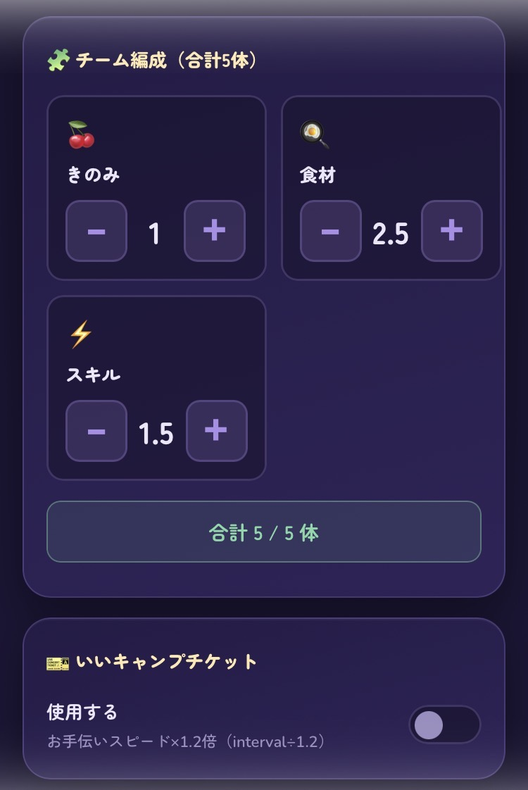
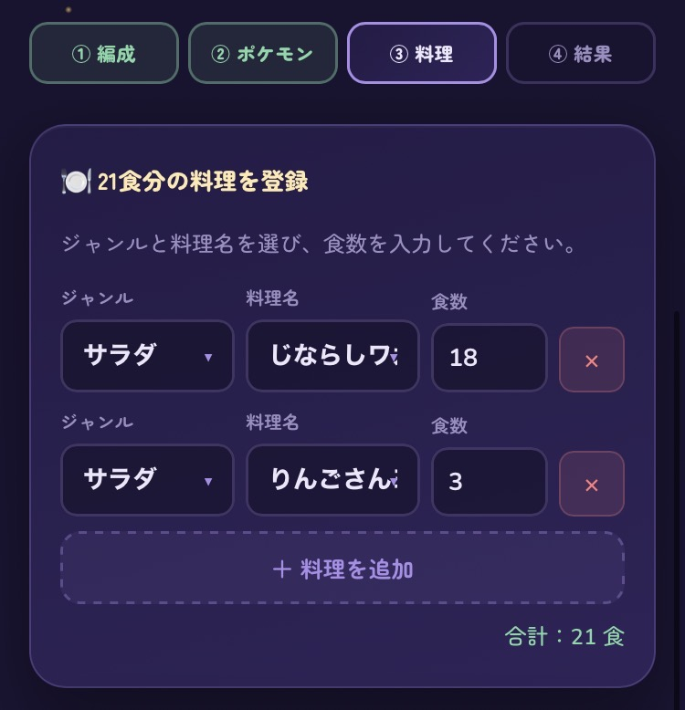
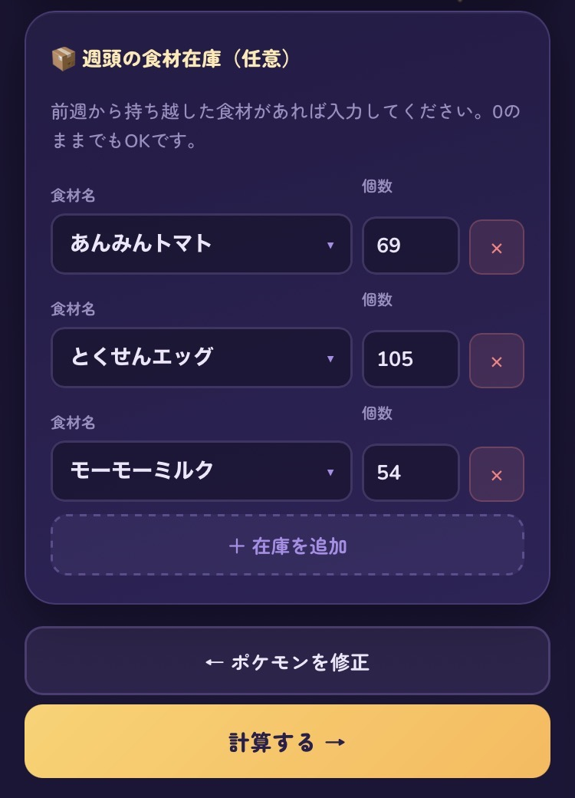

Team Ingredient
Simulator Tool Guide
Put a number on your ingredient Pokémon selection.
Enter your team composition, target dishes, and the Pokémon you own,
and simulate whether you can keep cooking all 21 meals a week.
1. Background and Purpose
Until now, the standard for selecting ingredient Pokémon has been the so-called "AAA-ingredient probability M." But in the current Pokémon Sleep environment, that standard alone is no longer enough.
- Target dishes keep getting larger
- Playstyles vary widely between free-to-play, Premium Pass, and paying players
- Required ingredient amounts change depending on how many ingredient-type Pokémon are on the team
- Level 70 sub-skill unlocks have changed the environment
Because of these factors, the amount of ingredients needed and the bar for "good enough" selection now varies a lot from player to player. And yet, there was no tool that let you judge this quantitatively.
So we built a tool that lets you evaluate whether you can keep cooking a dish for a full week, based on how many ingredient-type Pokémon are on your team, your target dishes, and the sub-skills of the Pokémon you actually own.

- A dish needs 4 kinds of ingredients and you've already nailed down 3
→ figure out which sub-skill on your last Pokémon will get you there - Look at your surplus ingredients and work backward to see what else you could cook
- Check how much unlocking Level 70 sub-skills would improve things
We hope this helps make your Pokémon Sleep life even more rewarding.
2. How to Use It
Enter how many berry, ingredient, and skill-type Pokémon are on your team.

Salamence and Gardevoir are always on the team. There are always
2 ingredient-type Pokémon. If Dedenne switches to ingredients
after triggering its skill twice, you'd enter
berry 1, ingredient 2.5, skill 1.5.
Select the name of each Pokémon you use, and register its level, sub-skills, nature, and ingredient layout.

- Berry and skill-type Pokémon are assumed to be used continuously for all 7 days
- Pokémon marked at 50% uptime are calculated as 3.5 days of use
- If ingredients gathered by these Pokémon are part of a target dish, the simulation assumes they're used
- Ingredient-type Pokémon are swapped in and out of the roster to gather the ingredients you need
Register your target dishes. You can set more than one, but make sure the total adds up to 21 meals.

You can also simulate carrying leftover ingredients over from the previous week. If you have ingredients to carry over, register them in the starting-stock field.

The calculation results are displayed.